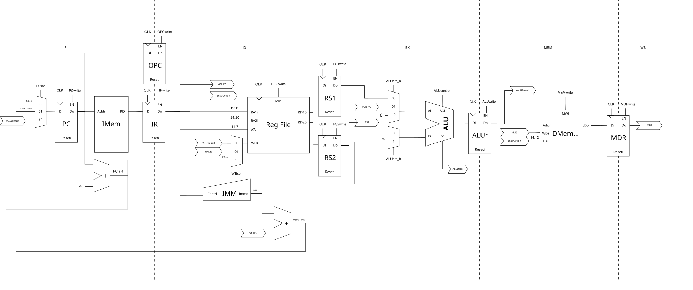
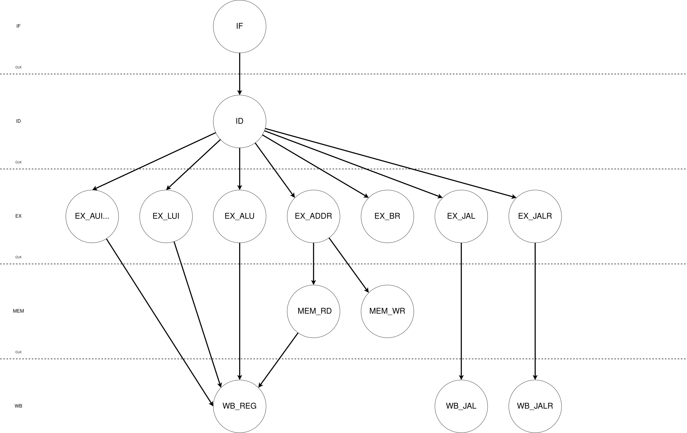
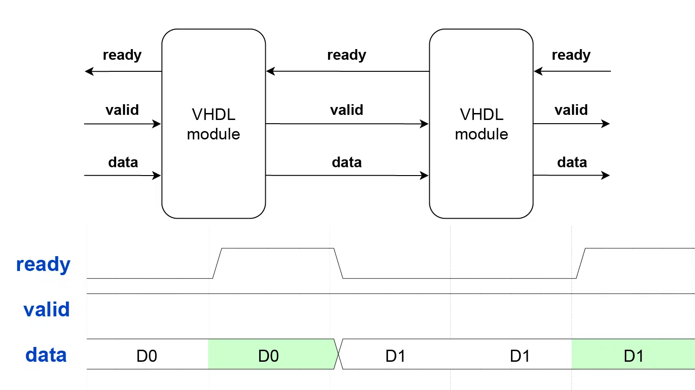

Microarquitetura Multiciclo (Multi-Cycle)
A microarquitetura multiciclo representa uma evolução significativa em relação ao modelo monociclo. Enquanto no monociclo cada instrução é completamente executada em um único pulso de relógio, o multiciclo divide a execução em múltiplos ciclos, permitindo frequencies de operação mais altas e melhor utilização dos recursos de hardware.
1. A Transição: Single-Cycle para Multi-Cycle
1.1. Motivação Física: O Problema do Clock
Na arquitetura monociclo, o período do clock é determinado pelo caminho crítico — o maior tempo de propagação combinacional ao longo do circuito. Este caminho crítico inclui obrigatoriamente:
- Leitura da memória de instruções
- Decodificação e leitura do banco de registradores
- Execução na ALU
- Acesso à memória de dados (para loads/stores)
- Escrita no banco de registradores
Como todas essas etapas devem caber em um único ciclo, o clock deve ser lento o suficiente para acomodar o pior caso. Isso significa que instruções simples (como ADD entre registradores) são forçadas a esperar, pois她们的 execução real é muito mais rápida que o tempo total disponível.
A solução multiciclo: Ao dividir a execução em etapas menores e balanceadas, cada estágio pode ser completado em um tempo muito menor. O somatório dos estágios resulta em um caminho crítico por estágio significativamente reduzido, permitindo que o processador opere em frequências substancialmente maiores.
1.2. Latência de Memória
O modelo monociclo assume implicitamente que as memórias respondem em tempo zero — uma abstração útil para análise, mas irrealista para implementações práticas.
O problema com memórias reais: - Memórias síncronas (block RAMs em FPGAs) tipicamente requerem 1 a 3 ciclos de latência - Memórias externas (DDR, SRAM) podem exigir dezenas de ciclos - O modelo monociclo não tolera essa variabilidade sem comprometer a frequência
A solução multiciclo:
A arquitetura multiciclo introduz estágios dedicados para acesso à memória. O processador pode "congelar" a FSM em estados de espera até que a memória retorne o sinal de ready, mantendo o determinismo da execução sem fixer a frequência do clock à latência máxima de memória.
2. O Novo Caminho de Dados (Datapath Multiciclo)
A principal diferença visual entre o datapath monociclo e multiciclo é a presença de registradores de estágio (pipeline registers) que separam logicamente cada fase da execução:

2.1. Registradores de Estágio
No modelo multiciclo, registradores intermediários são introduzidos para reter os resultados entre ciclos de clock para uma mesma instrução:
| Registrador | Sigla | Função |
|---|---|---|
| Instruction Register | IR |
Armazena a instrução atual durante sua execução |
| Memory Data Register | MDR |
Armazena o dado lido da memória antes do write-back |
| A / B | RS1, RS2 |
Armazenam os operandos lidos do banco de registradores |
| ALUOut | ALUResult |
Armazena o resultado da ALU entre estágios |
| OldPC | OPC |
Armazena o PC da instrução atual para cálculos relativos |
A implementação no datapath.vhd (linhas 157-163) demonstra esses registradores:
signal r_PC : std_logic_vector(31 downto 0);
signal r_OldPC : std_logic_vector(31 downto 0);
signal r_IR : std_logic_vector(31 downto 0);
signal r_MDR : std_logic_vector(31 downto 0);
signal r_RS1 : std_logic_vector(31 downto 0);
signal r_RS2 : std_logic_vector(31 downto 0);
signal r_ALUResult : std_logic_vector(31 downto 0);
Cada registrador é habilitado por um sinal de controle específico (definidos em riscv_uarch_pkg.vhd):
rs1_write : std_logic; -- Captura rs1 do banco para o reg interno 'A'
rs2_write : std_logic; -- Captura rs2 do banco para o reg interno 'B'
alur_write : std_logic; -- Captura resultado da ALU no reg 'ALUOut'
mdr_write : std_logic; -- Captura dado da memória no 'MDR'
ir_write : std_logic; -- Atualiza o Instruction Register (IR)
2.2. Reuso de Hardware
Uma das vantagens mais significativas da arquitetura multiciclo é a reutilização temporal de recursos. No monociclo,硬件 duplicado é necessário para aumentar paralelismo; no multiciclo, o mesmo hardware pode ser usado em diferentes ciclos para diferentes finalidades.
Exemplo: A ALU compartilhada
No monociclo, são necessários somadores dedicados para:
- Calcular PC + 4 (próxima instrução)
- Calcular PC + imediato (endereço de branch/jump)
- Executar operações aritméticas da instrução
No multiciclo, todas essas operações passam pela mesma ALU em diferentes ciclos:
- No IF: ALU calcula PC + 4 para atualizar o PC
- No EX: ALU executa a operação aritmética da instrução
- No EX_ADDR: ALU calcula o endereço de memória para loads/stores
O multiplexer ALUSrcA seleciona a entrada correta para cada ciclo:
with Control_i.alu_src_a select
s_alu_in_a <= r_RS1 when "00", -- Operando normal (rs1)
r_OldPC when "01", -- PC para AUIPC
x"00000000" when "10", -- Zero para LUI
r_RS1 when others;
Da mesma forma, o ALUSrcB seleciona entre o registrador rs2 ou o imediato:
3. Unidade de Controle e Sincronização
3.1. A Máquina de Estados Finita (FSM)
Na arquitetura multiciclo, a Unidade de Controle é implementada como uma FSM de Moore — uma máquina de estados finitos onde as saídas dependem exclusivamente do estado atual. O arquivo main_fsm.vhd implementa esta FSM, organizada em estados que correspondem às fases lógicas de execução:

Estados da FSM
A FSM é definida pelo tipo t_state em main_fsm.vhd:127-134:
type t_state is (
S_IF, -- IF (Instruction Fetch)
S_ID, -- ID (Instruction Decode)
S_EX_ALU, S_EX_ADDR, S_EX_BR, S_EX_JAL, S_EX_JALR, S_EX_LUI, S_EX_AUIPC, -- EX (Execution)
S_EX_FENCE, S_EX_SYSTEM,
S_MEM_RD, S_MEM_WR, -- MEM (Memory Access)
S_WB_REG, S_WB_JAL, S_WB_JALR -- WB (Write-Back)
);
Fluxo de Estados:
- S_IF (Instruction Fetch):
- PC é enviado para memória de instruções
- Instrução é armazenada no IR
-
PC é incrementado para PC+4
-
S_ID (Instruction Decode):
- Instrução é decodificada
- Registradores rs1 e rs2 são lidos para os registradores A e B
-
Imediato é gerado
-
S_EX_* (Execution):
- A ALU executa a operação conforme o tipo de instrução
-
Cada variante (ALU, ADDR, BR, JAL, etc.) configura a ALU de forma diferente
-
S_MEM_RD / S_MEM_WR (Memory Access):
-
Acesso à memória de dados para loads e stores
-
S_WB_* (Write-Back):
- Resultado é escrito no registrador de destino
Em uma FSM do tipo Moore, os sinais de saída dependem exclusivamente do estado atual, e não diretamente das entradas, o que torna o comportamento do controle mais estável e alinhado à divisão do processamento em ciclos bem definidos.
Tabela Completa de Transição de Estado
| Estado Atual | Condição | Próximo Estado | Descrição do Estado |
|---|---|---|---|
| IF | - | ID | Busca instrução e incrementa PC (PC+4) |
| ID | Tipo-R/I | EX_ALU | Decodifica instruções aritméticas/lógicas |
| ID | Load/Store | EX_ADDR | Decodifica acesso à memória |
| ID | Branch | EX_BR | Decodifica desvio condicional |
| ID | JAL | EX_JAL | Decodifica salto incondicional imediato |
| ID | JALR | EX_JALR | Decodifica salto incondicional via registrador |
| ID | LUI | EX_LUI | Decodifica carregamento imediato superior |
| ID | AUIPC | EX_AUIPC | Decodifica adição de imediato ao PC |
| EX_ALU | - | WB_REG | Operação da ALU concluída. Vai escrever no RegFile |
| EX_ADDR | Load | MEM_RD | Endereço calculado. Vai ler da memória |
| EX_ADDR | Store | MEM_WR | Endereço calculado. Vai escrever na memória |
| EX_BR | - | IF | Avalia condição (Zero) e atualiza PC se necessário |
| EX_JAL | - | WB_JAL | Calcula alvo (OldPC+IMM) imediatamente |
| EX_JALR | - | WB_JALR | Calcula alvo (rs1+IMM) e salva em ALUResult |
| EX_LUI | - | WB_REG | Soma 0+IMM. Vai para write-back |
| EX_AUIPC | - | WB_REG | Soma PC+IMM. Vai para write-back |
| MEM_RD | - | WB_REG | Lê DMem[ALUResult] e atualiza MDR |
| MEM_WR | - | IF | Escreve RS2 em DMem[ALUResult] |
| WB_REG | - | IF | Escrita do resultado em rd |
| WB_JAL | - | IF | Escreve retorno (PC+4) em rd. PC já foi atualizado |
| WB_JALR | - | IF | Escreve retorno (PC+4) em rd. PC é atualizado |
Tabela Completa de Sinais de Controle
| Sinal | Descrição do Sinal de Controle |
|---|---|
PCWrite |
Habilita escrita no PC. Permite que o PC seja atualizado apenas em estados específicos (como Fetch ou ao realizar um salto - branch/jump) |
OPCWrite |
Atualiza o OldPC. Guarda o valor atual do PC no registrador r_OldPC. É usado para salvar o endereço da instrução corrente - usando-o para cálculos relativos - atualizado normalmente no estado de Fetch |
PCSrc |
Seletor da fonte do próximo PC. Controla o multiplexador que define o novo valor do PC. Oppções são: 00 (PC + 4); 01 (Branch/JAL); 10 (JALR) |
IRWrite |
Habilita a escrita no IR. Permite carregar uma nova instrução apenas durante o estado de Fetch. |
MemWrite |
Habilita a escrita na memória. Sinal enviado para a unidade de armazenamento e carga (LSU) para efetuar a gravação de um dado. |
ALUSrcA |
Seletor do Operando A da ALU. Opções: 00 (rs1); 01 (PC atual); 10 (zero) |
ALUSrcB |
Seletor do Operando B da ALU. Opções: 0 (rs2); 1 (imediato) |
ALUControl |
Seletor para a operação da ALU. Define qual operação a ALU deve executar (ADD, SUB, AND etc.) |
RegWrite |
Habilita a escrita no banco de registradores. Permite gravar no registrador rd durante o estágio de write-back (WB) |
WBSel |
Seletor do dado de write-back. Opções: 00 (resultado da ALU); 01 (MDR); 10 (próximo PC) |
RS1Write |
Habilita a atualização do regisitrador de RS1. Controla a capatura do valor lido de rs1 do banco de registradores |
RS2Write |
Habilita a atualização do regisitrador de RS2. Controla a capatura do valor lido de rs2 do banco de registradores |
ALUrWrite |
Habilita a atualização do ALUResult. Controla a captura do resultado da ALU |
MDRWrite |
Habilita a escrita no MDR. Captura o dado carregado da memória |
Tabela Completa de Sinais por Estado
Legenda de Sinais
- ALUSrcA:
00=rs1;01=OldPC;10=Zero - ALUSrcB:
0=rs2;1=Imediato - PCSrc:
00=PC+4;01=Branch/JAL (Somador Dedicado);10=JALR (ALUResult) - WBSel:
00=ALUResult;01=MDR;10=PC+4 (Retorno) - Cond: Habilitado apenas se a condição de Branch for satisfeita (Zero flag)
- ALUControl:
ADD(Força Soma);Funct(Tipo-R/I);Branch(Resolve SUB/SLT/SLTU via funct3)
| Estado | PCWrite |
OPCWrite |
PCSrc |
IRWrite |
MemWrite |
ALUSrcA |
ALUSrcB |
ALUControl |
RegWrite |
WBSel |
RS1Write |
RS2Write |
ALUrWrite |
MDRWrite |
|---|---|---|---|---|---|---|---|---|---|---|---|---|---|---|
| IF | 1 | 1 | 00 | 1 | 0 | X | X | X | 0 | X | 0 | 0 | 0 | 0 |
| ID | 0 | 0 | X | 0 | 0 | X | X | X | 0 | X | 1 | 1 | 0 | 0 |
| EX_ALU | 0 | 0 | X | 0 | 0 | 00 | 0/1 | Funct | 0 | X | 0 | 0 | 1 | 0 |
| EX_ADDR | 0 | 0 | X | 0 | 0 | 00 | 1 | ADD | 0 | X | 0 | 0 | 1 | 0 |
| EX_BR | Cond | 0 | 01 | 0 | 0 | 00 | 0 | Branch | 0 | X | 0 | 0 | 0 | 0 |
| EX_JAL | 0 | 0 | X | 0 | 0 | X | X | X | 0 | X | 0 | 0 | 0 | 0 |
| EX_JALR | 0 | 0 | X | 0 | 0 | 00 | 1 | ADD | 0 | X | 0 | 0 | 1 | 0 |
| EX_LUI | 0 | 0 | X | 0 | 0 | 10 | 1 | ADD | 0 | X | 0 | 0 | 1 | 0 |
| EX_AUIPC | 0 | 0 | X | 0 | 0 | 01 | 1 | ADD | 0 | X | 0 | 0 | 1 | 0 |
| MEM_RD | 0 | 0 | X | 0 | 0 | X | X | X | 0 | X | 0 | 0 | 0 | 1 |
| MEM_WR | 0 | 0 | X | 0 | 1 | X | X | X | 0 | X | 0 | 0 | 0 | 0 |
| WB_REG | 0 | 0 | X | 0 | 0 | X | X | X | 1 | 00/01 | 0 | 0 | 0 | 0 |
| WB_JAL | 1 | 0 | 01 | 0 | 0 | X | X | X | 1 | 10 | 0 | 0 | 0 | 0 |
| WB_JALR | 1 | 0 | 10 | 0 | 0 | X | X | X | 1 | 10 | 0 | 0 | 0 | 0 |
3.2. Protocolo de Sincronização (Handshake Ready/Valid)
Para tolerar memórias com latência variável, o processador implementa um protocolo de handshake ready/valid nas interfaces de memória.
Hierarquia de Memória
O contraste entre BRAM e Memória Distribuída é definido pela latência: a BRAM economiza lógica mas "atrasa" o dado em 1-2 ciclos, enquanto a distribuída (registradores) é instantânea, mas cara em área. O protocolo Ready/Valid amarra essa hierarquia, servindo como o controle de tráfego que impede que a latência de acesso da memória cause perda de dados ou quebre o fluxo do pipeline (throughput) em altas frequências.
Interface de Handshake
Em processor_top.vhd:71-76:
IMem_rdy_i : in std_logic;
IMem_vld_o : out std_logic;
DMem_rdy_i : in std_logic;
DMem_vld_o : out std_logic;

FSM e Handshake
A FSM permanece em estados de espera até que a memória sinalize que a transação foi completada:
Estado S_IF (main_fsm.vhd:215-221):
when S_IF =>
-- STALL DE INSTRUÇÃO: Só avança se a memória entregar a instrução
if imem_rdy_i = '1' then
next_state <= S_ID;
else
next_state <= S_IF; -- Permanece esperando
end if;
Estado S_MEM_RD (main_fsm.vhd:297-302):
when S_MEM_RD =>
if dmem_rdy_i = '1' then
next_state <= S_WB_REG;
else
next_state <= S_MEM_RD; -- Stall: fica esperando
end if;
Estado S_MEM_WR (main_fsm.vhd:305-310):
when S_MEM_WR =>
if dmem_rdy_i = '1' then
next_state <= S_IF;
else
next_state <= S_MEM_WR; -- Stall: fica esperando
end if;
Geração de Sinais de Handshake
A FSM também gera os sinais valid para indicar ao sistema de memória que o processador está pronto para uma transação:
Sinais de saída em S_IF (main_fsm.vhd:359-366):
when S_IF =>
imem_vld_o <= '1';
-- Só atualiza quando o dado chega
if imem_rdy_i = '1' then
IRWrite_o <= '1';
PCWrite_o <= '1';
OPCWrite_o <= '1';
end if;
Sinais de saída em S_MEM_RD (main_fsm.vhd:533-540):
when S_MEM_RD =>
dmem_vld_o <= '1';
-- Só grava no MDR quando o dado estiver PRONTO
if dmem_rdy_i = '1' then
MDRWrite_o <= '1';
end if;
3.3. Sinais de Controle
A FSM gera todos os sinais necessários para controlar o datapath:
| Sinal | Descrição |
|---|---|
PCWrite |
Habilita escrita no PC |
OPCWrite |
Atualiza o OldPC |
IRWrite |
Habilita escrita no IR |
MemWrite |
Habilita escrita na memória de dados |
RegWrite |
Habilita escrita no banco de registradores |
RS1Write / RS2Write |
Captura operandos do banco de registradores |
ALUrWrite |
Captura resultado da ALU |
MDRWrite |
Captura dado da memória |
ALUSrcA |
Seleciona operando A da ALU (rs1, PC, Zero) |
ALUSrcB |
Seleciona operando B da ALU (rs2, Imediato) |
PCSrc |
Seleciona fonte do próximo PC |
WBSel |
Seleciona dado para write-back (ALUOut, MDR, PC+4, CSR) |
4. Integração no Top-Level
O processor_top.vhd do multiciclo apresenta a mesma estrutura de integração que o monociclo, porém com a diferença fundamental de que o Control Path agora é uma FSM em vez de lógica puramente combinacional.
A arquitetura de Harvard Modificada é mantida, com barramentos separados para IMEM e DMEM, permitindo acesso simultâneo a instruções e dados.
Diferenças Principais entre Single-Cycle e Multi-Cycle
| Aspecto | Single-Cycle | Multi-Cycle |
|---|---|---|
| ** clock por instrução | 1 | 2-5 (variável) |
| Frequência máxima | Limitada pelo caminho crítico completo | Maior (caminho crítico por estágio) |
| Unidade de Controle | Lógica combinacional | FSM sequencial |
| Recursos de hardware | Duplicados para paralelismo | Compartilhados no tempo |
| Registradores intermediários | Não existem | IR, MDR, A, B, ALUOut, OldPC |
| Handshake de memória | Não suportado nativamente | Suportado via Ready/Valid |
| Complexidade de controle | Baixa | Média-Alta |
5. Conclusão
A microarquitetura multiciclo representa um compromisso entre simplicidade de controle (herdada do monociclo) e desempenho (proporcional à frequência de operação). Ao dividir a execução em múltiplos ciclos e reutilizar recursos de hardware no tempo, o processador pode atingir frequencies significativamente mais altas que o monociclo, mantendo uma complexidade controlável.
A implementação do protocolo handshake ready/valid garante que o processador pode funcionar corretamente com memórias reais de latência variável, algo impossível no modelo monociclo.
Referências
- JENSEN, J. J. How the AXI-style ready/valid handshake works. Disponível em: https://vhdlwhiz.com/how-the-axi-style-ready-valid-handshake-works/.
- AMD Technical Information Portal. 7 Series FPGAs Memory Resources. Disponível em: https://docs.amd.com/v/u/en-US/ug473_7Series_Memory_Resources.